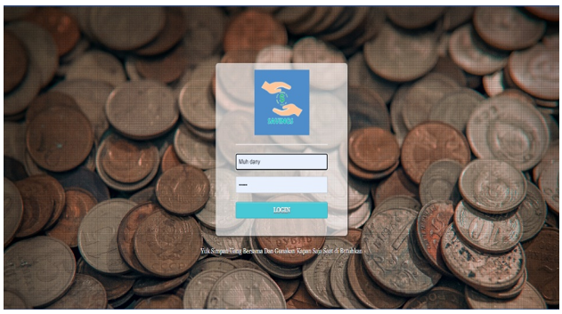
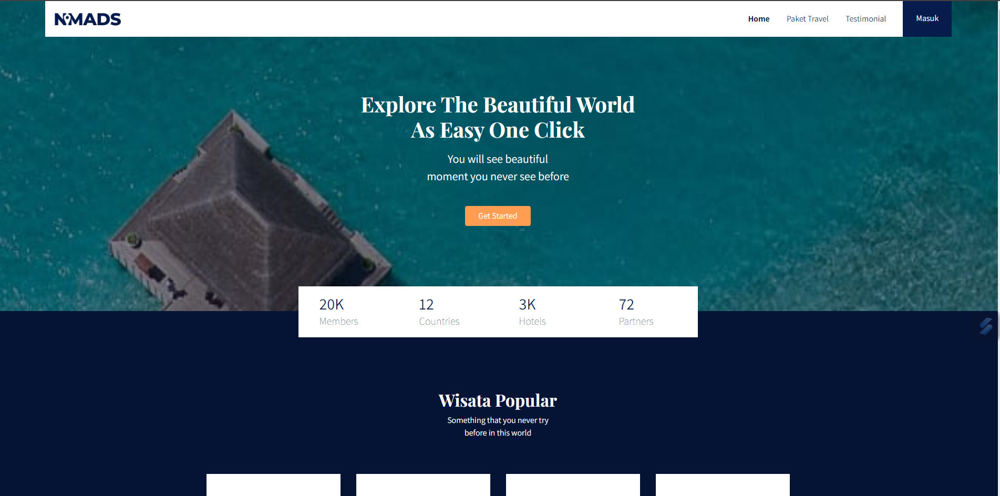
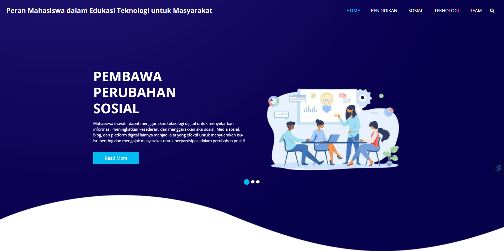
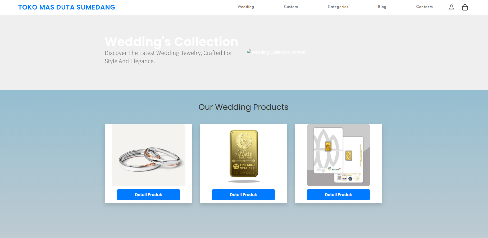
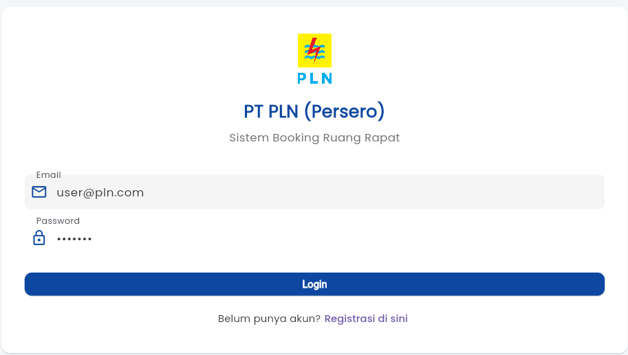
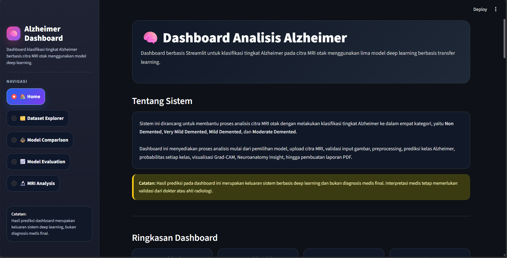

2022 – 2023Simpan Pinjam
Sistem koperasi digital yang menyediakan fitur simpanan, pinjaman, serta laporan keuangan real-time untuk pengelolaan anggota dan dana koperasi.
Beberapa proyek yang pernah saya kerjakan selama masa perkuliahan.

2022 – 2023Sistem koperasi digital yang menyediakan fitur simpanan, pinjaman, serta laporan keuangan real-time untuk pengelolaan anggota dan dana koperasi.

2023 – 2024Platform pencarian lokasi wisata, galeri destinasi, ulasan pengunjung, dan sistem booking tiket yang mempermudah wisatawan menjelajahi Indonesia.

2023 – 2024Website edukasi berbasis web yang berisi materi interaktif, soal latihan, dan kuis untuk mendukung pembelajaran daring di berbagai jenjang.

2024 – 2025Website katalog emas dengan update harga real-time, fitur keranjang dan checkout online, serta integrasi pembayaran sederhana berbasis web.

2025 – 2026📱 Aplikasi Android
Aplikasi booking room berbasis App Android dengan fitur pengecekan ketersediaan ruangan secara real-time, sistem reservasi, serta pengelolaan jadwal penggunaan ruangan secara praktis dan efisien.

2026 – 2026 Terbaru🧠 Deep Learning & Streamlit (Tugas Akhir)
Perbedaan visual antar tingkat Alzheimer pada citra MRI sangat halus. Proyek ini membandingkan lima model transfer learning (EfficientNetB0, ResNet50, VGG16, MobileNetV2, DenseNet121) untuk klasifikasi tingkat Alzheimer, lalu menerapkannya ke dashboard Streamlit dengan upload dan validasi citra, prediksi beserta probabilitas, visualisasi Grad-CAM, dan laporan PDF. Dirancang sebagai pendukung analisis, bukan alat diagnosis medis.
Tertarik berkolaborasi atau ingin melihat lebih banyak karya?